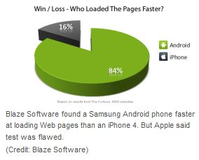

Author: Mr. Xian Lin
A touch screen or a mini-keyboard, an over five megapixel camera with autofocus, 3G and Wi-Fi connectivity, online Facebook chatting and e-mail accessing applications – when you integrate these components into a single device, which has been largely owned by many people in this country, you would probably figure out that this device is a smartphone.
The popularity of smartphones in the United States is primarily due to its combined functionalities of a traditional cell phone and various local and online applications within it. Many world-leading traditional mobile phone developing companies, such as Nokia, Motorola, Samsung, and some huge software service corporations like Apple and Google, have all stepped into this smartphone market. The diversity of smartphone providers gives domestic consumers various alternatives; meanwhile, the competition between those smartphone providers becomes hotter day by day. This paper is trying to find out which company would become the potential champion in this race, ultimately occupying the biggest cake in this market.
| Brand | 2009 Market Share | 2010 Market Share | Increase in Market Share |
|---|---|---|---|
| iPhone | 14.4% | 15.7% | 1.3% |
| Android | 3.9% | 22.7% | 18.8% |
Since a smartphone functions by the operating system that supports it, and from the viewpoint of most consumers, functionality is their first concern over a smart phone, instead of other traditional factors such as battery life and signal strength, this paper will put all phones utilizing Android operating system into one category, naming “Android-equipped phones.” Hence, the potential championship would probably be between the two -- Apple Inc., for which enthusiastic consumers lined a long queue up in front of Best Buy before the day the latest iPhone is about to release; and Google Inc., who though started its smartphone business later than most of its rivals, has made a significant growth by market share in the year 2010.
| Brand | Share of Subscribers ending in Oct-10 | Share of Subscribers ending in Jan-11 | Point Change |
|---|---|---|---|
| Apple | 24.6% | 24.7% | 0.1% |
| 23.5% | 31.2% | 7.7% |
From a technical review, Android series is a little more outstanding than iOS (the operating system that iPhone uses). According to the ComScore survey, during the period from the third quarter to the fourth quarter in 2010, Android-equipped phone experienced a market share leap of 7.7%, compared merely 0.1% of Apple’s iPhone.[1] This is due to the efficiency of most applications supported by Android.
Taking a comparison of web browsers of the two type phones for example, Samsung’s Nexus S, an Android OS phone is 84% faster than iPhone 4 in browsing the same extensive amount of web pages.[2] Although some Apple officers argue that the comparison did not use iPhone’s powerful Safari, this again reveals Apple’s limitation in application development, because outside developers could only custom applications of an iPhone through UIWebView, which allows developers to embed web content into an app yet denies synchronized updates with Apple’s core browser – Safari.[2]